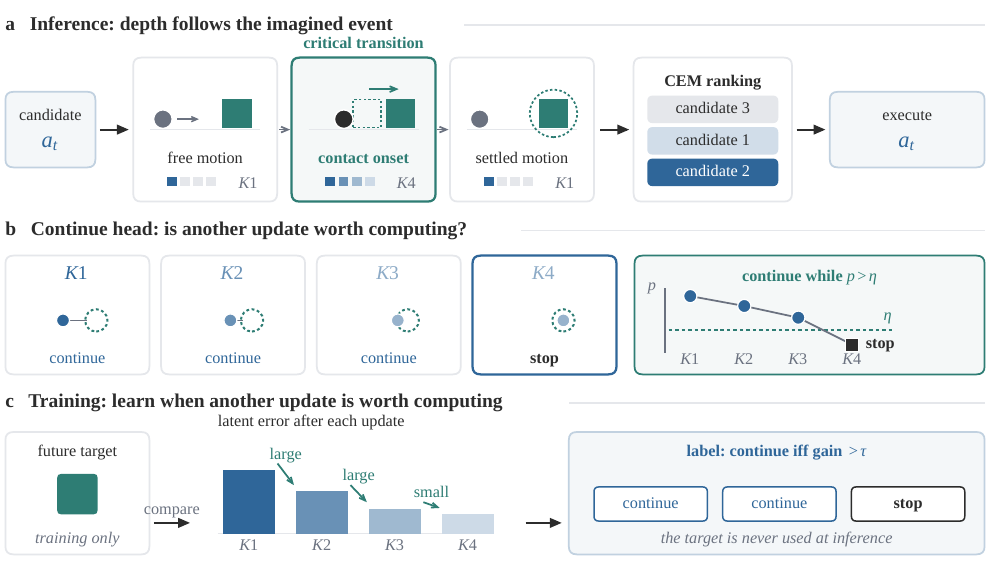
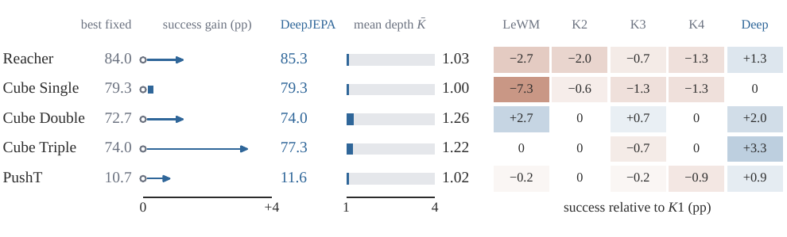
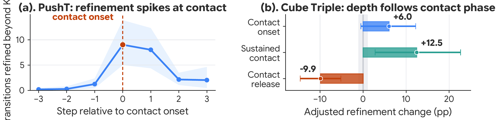

Overview
World-model planners usually scale outward by rolling farther, sampling more trajectories, or optimizing longer. DeepJEPA introduces a complementary test-time scaling axis: adaptive recurrent depth inside each imagined transition.
A weight-tied joint-embedding predictive world model learns whether another recurrent update is worth computing for each candidate and rollout step. Most transitions remain shallow, while additional computation concentrates at decision-critical events that can change CEM rankings and the selected action.
Method
1. Imagine
Roll candidate actions through latent space using the same outer planning budget.
2. Refine selectively
Spend recurrent depth only when the continue head predicts that another update is worthwhile.
3. Rank and act
Return the selected latent predictions to CEM, where changed costs can alter the executed action.

Results
5 visual-control settings · 1.00–1.26 mean selected updates · +3.3 pp largest gain over the best fixed depth

| Task | Best fixed | DeepJEPA | Gain | Mean depth |
|---|---|---|---|---|
| Reacher | 84.0 | 85.3 | +1.3 | 1.03 |
| Cube Single | 79.3 | 79.3 | 0.0 | 1.00 |
| Cube Double | 72.7 | 74.0 | +1.3 | 1.26 |
| Cube Triple | 74.0 | 77.3 | +3.3 | 1.22 |
| PushT | 10.7 | 11.6 | +0.9 | 1.02 |
Where computation goes
Refinement rises at PushT contact onset and during sustained Cube Triple contact, despite training without contact labels. The learned computation policy tracks changes in local dynamics rather than rollout position alone.
Allocate internal computation where it can change the planner's decision.

Citation
@article{jin2026deepjepa,
title={DeepJEPA: Scaling World Models from Within},
author={Jin, Zijian and Zhang, Yunbei and Liu, Yuanzhe and Liu, Ming and Chen, Baian and Ye, Weirui and Liu, Shilong and Pavone, Marco},
journal={arXiv preprint arXiv:2610.00368},
year={2026}
}